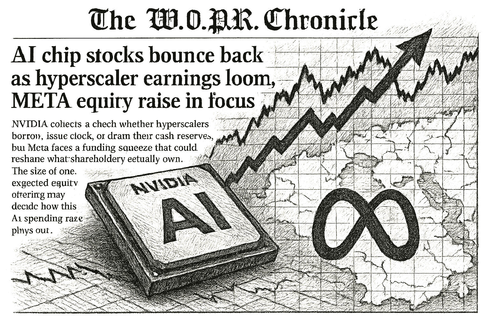

SPY
Current: $769.07Change: -8.94 (-1.15%)
Updated:
Source: yahoo_chartFreshness: fresh
NVIDIA collects a check whether hyperscalers borrow, issue stock, or drain their cash reserves, but Meta faces a funding squeeze that could reshape what shareholders actually own. The size of one expected equity offering may decide how this AI spending race plays out.

Today's Headline: AI chip stocks bounce back as hyperscaler earnings loom, META equity raise in focus
Setup: NVIDIA collects a check whether hyperscalers borrow, issue stock, or drain their cash reserves, but Meta faces a funding squeeze that could reshape what shareholders actually own. The size of one expected equity offering may decide how this AI spending race plays out.
Primary Topic: Tech Stocks
Specific Development: Tech stocks, particularly the QQQ, are experiencing declines as geopolitical tensions escalate, notably with Egypt delaying a vote on military support for Saudi Arabia.
Why Today Is Different: The combination of geopolitical risks and the upcoming earnings reports from major tech companies is reshaping market sentiment.
Secondary Topics: Earnings Reports; Geopolitical Tensions
Tone: cautious
Sectors: Technology; Consumer Discretionary
Companies: NVIDIA; Tesla
Commodities: Oil; Gold
Countries Or Regions: United States; Middle East
Macro Themes: Earnings Season; Geopolitical Risks
Why This Story: The interplay between earnings expectations and geopolitical developments is critical for market direction, especially in the tech sector.
Why This Matters: AI chip stocks bounce back as hyperscaler earnings loom, META equity raise in focus is the clearest current evidence-led frame for Joshua's observation-only review; missing facts remain explicit intelligence gaps.
Summary: Overnight, tech stocks faced declines, particularly QQQ, down 3.35%, while Brent crude rose 3.05%. The VIX increased by 7.41%, indicating heightened market volatility.
What Happened Overnight: Tech stocks declined amid geopolitical tensions, while oil prices rose.
What Changed Materially: The delay in Egypt's vote on military support has added to market uncertainty.
Which Assets Sectors Are Affected: Tech sector, particularly QQQ; oil prices; VIX.
Does It Look Like Noise Or A Real Regime Input: This appears to be a real regime input given the geopolitical context.
Why This Matters: Joshua can use verified cross-asset moves and deterministic risk context while keeping causation explicitly unresolved.
No high-priority earnings expectation block is supported by the current canonical snapshot.
- WOPR learning pipeline: Collecting samples
- Candidates evaluated 24h: 0
- Current gate: Evidence
- Notification ledger events in 24h: 2
- Pending orders created/canceled/filled/expired: 0/0/0/0
- Pending lifecycle interpretation: Pending-order cancellations have trackable reasons and no obvious rapid churn pattern.
- Portfolio risk: Label: High / Score: 91.5
- Latest intelligence gap report: intelligence_gap_report_2026-10-18.pdf
Why This Matters: The active gate is Evidence, so the key question is why candidates are stopping before approval, not how to force trades.
- Sentinel role: infrastructure and operational status only.
- State: ONLINE
- Last successful validation: 2026-10-20T14:15:53.478215+00:00
- Payloads accepted/rejected: 28165/0
- Node health score: 100
Why This Matters: Sentinel is ONLINE, so Joshua should use its context only to the extent the latest accepted pulse is fresh and authenticated.
CANDIDATES MOVING THROUGH JOSHUA'S INVESTMENT-REVIEW WORKFLOW
FROZEN DAILY BRIEF SNAPSHOT | 2026-10-20T14:18:00.174017+00:00
QUEUE SUMMARY | Investment Ready: 0 | Waiting for Price: 0 | Waiting for Evidence: 1 | Research Underway: 2 | Governance Hold: 7 | Monitor Only: 0
Investment-ready status: No candidates are currently Investment Ready.
#6 NVDA - Waiting for Evidence [Moved Up 7->6]
Joshua's Thesis: Positive thesis not yet established.
Why Waiting: Positioning gate failed.
Price: 217.03 now; 216.16 preferred entry
What Unlocks It: Clear valuation support; Evidence that the business quality matches the risk being taken; Independent evidence streams pointing the same way
Portfolio Fit: 0.0/100 — VERY LOW
Portfolio Fit Drivers: projected Technology exposure 66.3%; projected AI infrastructure exposure 66.3%; candidate amount $100 vs $51 currently allocated
Candidate Risk: 96.6/100 — VERY HIGH ↓
Risk Drivers: projected Technology exposure 66.3%; projected AI infrastructure exposure 66.3%; candidate amount $100 vs $51 currently allocated
Next: Positioning status must no longer be warning. Owner: Joshua.
#7 AVGO - Governance Hold [Moved Up 8->7]
Joshua's Thesis: Positive thesis not yet established.
Why Waiting: Governance gate has not cleared.
Price: 338.56 now; 357.70 preferred entry
What Unlocks It: Governance gate clears; Clear valuation support; Evidence that the business quality matches the risk being taken
Portfolio Fit: 0.0/100 — VERY LOW
Portfolio Fit Drivers: projected Technology exposure 66.3%; projected AI infrastructure exposure 66.3%; candidate amount $100 vs $51 currently allocated
Candidate Risk: 96.6/100 — VERY HIGH ↓
Risk Drivers: projected Technology exposure 66.3%; projected AI infrastructure exposure 66.3%; candidate amount $100 vs $51 currently allocated
Next: Re-evaluate after the recorded gate clears. Owner: Columbo.
#10 QBTS - Governance Hold [Moved Up 12->10]
Joshua's Thesis: Positive thesis not yet established.
Why Waiting: Governance gate has not cleared.
Price: 11.92 now; 17.52 preferred entry
What Unlocks It: Governance gate clears; Clear valuation support; Evidence that the business quality matches the risk being taken
Portfolio Fit: 0.0/100 — VERY LOW
Portfolio Fit Drivers: projected Unclassified exposure 83.2%; projected Unclassified exposure 83.2%; candidate amount $100 vs $51 currently allocated
Candidate Risk: 100.0/100 — VERY HIGH
Risk Drivers: projected Unclassified exposure 83.2%; projected Unclassified exposure 83.2%; candidate amount $100 vs $51 currently allocated
Next: Re-evaluate after the recorded gate clears. Owner: Joshua.
#15 RCL - Governance Hold [Moved Up 18->15]
Joshua's Thesis: Positive thesis not yet established.
Why Waiting: Governance gate has not cleared.
Price: 285.55 now; 278.78 preferred entry
What Unlocks It: Governance gate clears; Clear valuation support; Evidence that the business quality matches the risk being taken
Portfolio Fit: 0.0/100 — VERY LOW
Portfolio Fit Drivers: projected Unclassified exposure 83.2%; projected Unclassified exposure 83.2%; candidate amount $100 vs $51 currently allocated
Candidate Risk: 100.0/100 — VERY HIGH
Risk Drivers: projected Unclassified exposure 83.2%; projected Unclassified exposure 83.2%; candidate amount $100 vs $51 currently allocated
Next: Re-evaluate after the recorded gate clears. Owner: Columbo.
#16 PLTR - Governance Hold [Moved Up 17->16]
Joshua's Thesis: Positive thesis not yet established.
Why Waiting: Governance gate has not cleared.
Price: 193.94 now; 194.15 preferred entry
What Unlocks It: Governance gate clears; Clear valuation support; Evidence that the business quality matches the risk being taken
Portfolio Fit: 0.0/100 — VERY LOW
Portfolio Fit Drivers: projected Technology exposure 66.3%; projected AI software exposure 66.3%; candidate amount $100 vs $51 currently allocated
Candidate Risk: 96.6/100 — VERY HIGH ↓
Risk Drivers: projected Technology exposure 66.3%; projected AI software exposure 66.3%; candidate amount $100 vs $51 currently allocated
Next: Re-evaluate after the recorded gate clears. Owner: Columbo.
#21 SPCX - Governance Hold [Moved Up 23->21]
Joshua's Thesis: Positive thesis not yet established.
Why Waiting: Governance gate has not cleared.
Price: 146.63 now; 152.11 preferred entry
What Unlocks It: Governance gate clears; Clear valuation support; Evidence that the business quality matches the risk being taken
Portfolio Fit: 0.0/100 — VERY LOW
Portfolio Fit Drivers: projected Unclassified exposure 83.2%; projected Unclassified exposure 83.2%; candidate amount $100 vs $51 currently allocated
Candidate Risk: 100.0/100 — VERY HIGH
Risk Drivers: projected Unclassified exposure 83.2%; projected Unclassified exposure 83.2%; candidate amount $100 vs $51 currently allocated
Next: Re-evaluate after the recorded gate clears. Owner: Advisory Committee.
#22 UUUU - Governance Hold [Moved Up 25->22]
Joshua's Thesis: Positive thesis not yet established.
Why Waiting: Governance gate has not cleared.
Price: 8.15 now; 14.60 preferred entry
What Unlocks It: Governance gate clears; Clear valuation support; Evidence that the business quality matches the risk being taken
Portfolio Fit: 0.0/100 — VERY LOW
Portfolio Fit Drivers: projected Unclassified exposure 83.2%; projected Unclassified exposure 83.2%; candidate amount $100 vs $51 currently allocated
Candidate Risk: 100.0/100 — VERY HIGH
Risk Drivers: projected Unclassified exposure 83.2%; projected Unclassified exposure 83.2%; candidate amount $100 vs $51 currently allocated
Next: Re-evaluate after the recorded gate clears. Owner: Advisory Committee.
#23 XRAY - Research Underway [Moved Up 24->23]
Joshua's Thesis: Positive thesis not yet established.
Why Waiting: Research evidence is still being gathered.
Price: 8.57 now; Preferred entry not established.
What Unlocks It: Clear valuation support; Evidence that the business quality matches the risk being taken; Independent evidence streams pointing the same way
Portfolio Fit: 0.0/100 — VERY LOW
Portfolio Fit Drivers: projected Unclassified exposure 83.2%; projected Unclassified exposure 83.2%; candidate amount $100 vs $51 currently allocated
Candidate Risk: 100.0/100 — VERY HIGH
Risk Drivers: projected Unclassified exposure 83.2%; projected Unclassified exposure 83.2%; candidate amount $100 vs $51 currently allocated
Next: Clear valuation support; Evidence that the business quality matches the risk being taken; Independent evidence streams pointing the same way. Owner: Columbo.
#24 DIA - Research Underway [NEW]
Joshua's Thesis: Positive thesis not yet established.
Why Waiting: Research evidence is still being gathered.
Price: Current price unavailable.; Preferred entry not established.
What Unlocks It: Clear valuation support; Evidence that the business quality matches the risk being taken; Independent evidence streams pointing the same way
Portfolio Fit: 0.0/100 — VERY LOW
Portfolio Fit Drivers: projected ETF exposure 66.3%; projected Broad market exposure 66.3%; candidate amount $100 vs $51 currently allocated
Candidate Risk: 96.6/100 — VERY HIGH
Risk Drivers: projected ETF exposure 66.3%; projected Broad market exposure 66.3%; candidate amount $100 vs $51 currently allocated
Next: Clear valuation support; Evidence that the business quality matches the risk being taken; Independent evidence streams pointing the same way. Owner: Columbo.
#25 ANGX - Governance Hold [NEW]
Joshua's Thesis: Positive thesis not yet established.
Why Waiting: Governance gate has not cleared.
Price: 3.41 now; 4.32 preferred entry
What Unlocks It: Governance gate clears; Clear valuation support; Evidence that the business quality matches the risk being taken
Portfolio Fit: 0.0/100 — VERY LOW
Portfolio Fit Drivers: projected Unclassified exposure 83.2%; projected Unclassified exposure 83.2%; candidate amount $100 vs $51 currently allocated
Candidate Risk: 100.0/100 — VERY HIGH
Risk Drivers: projected Unclassified exposure 83.2%; projected Unclassified exposure 83.2%; candidate amount $100 vs $51 currently allocated
Next: Re-evaluate after the recorded gate clears. Owner: Advisory Committee.
Observation only. This section creates no recommendation, order, authority, or execution instruction.
- If NVDA reaches the recorded price condition <= 216.16, which recorded evidence and governance requirements would still remain?
- Which recorded governance requirement must clear before AVGO can advance?
- Which recorded governance requirement must clear before QBTS can advance?
- Which recorded governance requirement must clear before RCL can advance?
The tech sector is under pressure as geopolitical tensions rise, particularly with the delay in Egypt's military support vote. This uncertainty is compounded by the upcoming earnings reports from major companies like NVIDIA and Tesla, which could significantly influence market sentiment. The VIX's increase indicates heightened volatility, suggesting that investors are cautious as they navigate these developments.
Compared to: 2026-10-19
- Market weather: Still Elevated
- Top opportunity: Still DELL
- Joshua gate: Still Evidence
- 2Y Treasury.last_price: 4.77 -> 4.77 (unchanged); 2Y Treasury.last_price changed 0.00% versus the prior frozen Chronicle snapshot.
- 2Y Treasury.percent_change: 0.6329113924050498 -> 0.6329113924050498 (unchanged); 2Y Treasury.percent_change changed 0.00% versus the prior frozen Chronicle snapshot.
- 10Y Treasury.last_price: 5.15 -> 5.15 (unchanged); 10Y Treasury.last_price changed 0.00% versus the prior frozen Chronicle snapshot.
- 10Y Treasury.percent_change: 1.1787819253438212 -> 1.1787819253438212 (unchanged); 10Y Treasury.percent_change changed 0.00% versus the prior frozen Chronicle snapshot.
- 30Y Treasury.last_price: 5.48 -> 5.48 (unchanged); 30Y Treasury.last_price changed 0.00% versus the prior frozen Chronicle snapshot.
- 30Y Treasury.percent_change: 0.9208103130755195 -> 0.9208103130755195 (unchanged); 30Y Treasury.percent_change changed 0.00% versus the prior frozen Chronicle snapshot.
- SPY.last_price: 767.32 -> 769.07 (up); SPY.last_price changed 0.23% versus the prior frozen Chronicle snapshot.
- SPY.percent_change: -1.3740183288132468 -> -1.14908548733306 (up); SPY.percent_change changed 16.37% versus the prior frozen Chronicle snapshot.
- QQQ.last_price: 715.125 -> 718.675 (up); QQQ.last_price changed 0.50% versus the prior frozen Chronicle snapshot.
- QQQ.percent_change: -3.8254636416208356 -> -3.3480371720214763 (up); QQQ.percent_change changed 12.48% versus the prior frozen Chronicle snapshot.
- IWM.last_price: 273.84 -> 274.05 (up); IWM.last_price changed 0.08% versus the prior frozen Chronicle snapshot.
- IWM.percent_change: -1.033610408384537 -> -0.9577159378388064 (up); IWM.percent_change changed 7.34% versus the prior frozen Chronicle snapshot.
The combination of geopolitical risks and the upcoming earnings reports from major tech companies is reshaping market sentiment.
No new warnings; however, the geopolitical landscape remains a concern.
Portfolio Construction Review
Current allocation: 50.76 allocated.
Largest sector: Industrials at 50.0%.
Largest theme: Economic cycle at 50.0%.
Diversification: Mixed (50.0).
Cash allocation: 94.9% unallocated.
Recommended exposure: DELL at portfolio-fit score 0.0.
Portfolio fit: DELL has strong standalone evidence, but it increases portfolio concentration.
Why This Matters: Portfolio Manager evaluates whether an opportunity improves this portfolio; it does not select the investment, vote, or authorize execution.
Today, the evidence gate matters more than the ticker list; Evidence is where Joshua's attention belongs.
| Can trigger trade | no |
| Can modify trade rules | no |
| Can add watch items | yes |
| Can add review questions | yes |
| Can adjust confidence notes | yes |
| Input policy | external_intelligence_plus_sanitized_internal_observations |
| External policy | The Editor-in-Chief synthesizes current world/market context where available and labels unknowns; provider/model provenance remains separate. |
| Internal policy | Joshua/WOPR/Sentinel facts are supplied as sanitized observation-only summaries. |
| Editorial model | gpt-4o-mini |
- Selected by a deterministic daily rotation through symbols already present in the persisted Chronicle snapshot.
- Next earnings: October 28, 2026 (after close); status: scheduled.
- Source: finnhub_earnings_calendar.
- Here’s How Much Tesla Stock Is Expected to Move After Earnings
- Desk: earnings; source: Yahoo; linked symbols: TSLA.
- Published: 10/19/26 12:32 MST.
- High-impact watch: FOMC Meeting Two-day meeting, October 27 - 28 Press Conference - 10/28/26 11:00 MST.
- Affected assets: US equities, Treasuries, USD; source: federal_reserve_calendar.
- RCL earnings: October 27, 2026, before open.
- FDX earnings: October 28, 2026, after close.
- XRAY earnings: October 29, 2026, before open.
- Health Care: 5.58% session performance; source: persisted sector ledger.
- Consumer Staples: 4.06% session performance; source: persisted sector ledger.
- Consumer Discretionary: 2.50% session performance; source: persisted sector ledger.
- NASDAQ FUTURES: -1.66% recorded move; price: 29644.5.
- Session: open; catalyst status: possible; source: yahoo_chart.
- Upcoming Fed meeting; why it matters: Will clarify the Fed's stance on interest rates amid inflation concerns.
- State: narrow_leadership; score: 46.50/100; advance/decline ratio: 0.59.
- Above 50-day average: 49.60%; sample: 119; provider: sentinel_sampled_breadth.
- Decision outcomes evaluated: 16; currently untestable: 0.
- Warning review: unknown 3; confidence calibration: insufficient_sample.
- Current macro regime: defensive_rotation; change probability: unavailable.
- Risk dashboard: cautious (58/100); breadth: narrow_leadership; sentiment: neutral.
- Scenario board only - a current-state observation, not a forecast or execution instruction.
- Hosts Making Money with Charles Payne and founded Wall Street Strategies to provide market research for individual investors.
- Published quotation: "The stock market is the greatest wealth-creation machine in history."
- Published framework: Look for leadership, improving fundamentals, innovation, and market participation while encouraging individuals to build knowledge, accept responsibility, and engage with long-term wealth creation.
- Committee lens: Payne contributes a growth-leadership and individual-opportunity lens, asking whether improving fundamentals and market recognition support the upside case.
- Public philosophy profile only; no participation, endorsement, or current recommendation is implied.
- How will the upcoming earnings reports from NVIDIA and Tesla impact market sentiment?
- DELL: No canonical symbol-specific material event is linked.
- Attach the missing DELL evidence before the next committee review.
- Define evidence that would confirm or retire each unresolved warning before the next review window.
- If NVDA reaches the recorded price condition <= 216.16, which recorded evidence and governance requirements would still remain?
- Which recorded governance requirement must clear before AVGO can advance?
- Which recorded governance requirement must clear before QBTS can advance?
- Which recorded governance requirement must clear before RCL can advance?
- Evidence agenda: DELL - No canonical symbol-specific material event is linked.
- Proposed review: Tesla's earnings report; why it matters: Could provide insights into consumer demand and production capabilities.
- Proposed review: Geopolitical developments in the Middle East; why it matters: Could impact oil prices and market sentiment.
- Canonical instruments reviewed: 24; delayed 6, fresh 18.
- Leading sources: yahoo_chart (21), treasury_official_yield_curve (3).
- Snapshot recorded: 10/20/26 07:15 MST.
AI chip stocks bounce back as hyperscaler earnings loom, META equity raise in focus
Storm meter: Elevated
#6 NVDA - Waiting for Evidence [Moved Up 7->6]
Observation mode: observation_only
Watch: Tesla's earnings report; why it matters: Could provide insights into consumer demand and production capabilities.
Question: If NVDA reaches the recorded price condition <= 216.16, which recorded evidence and governance requirements would still remain?